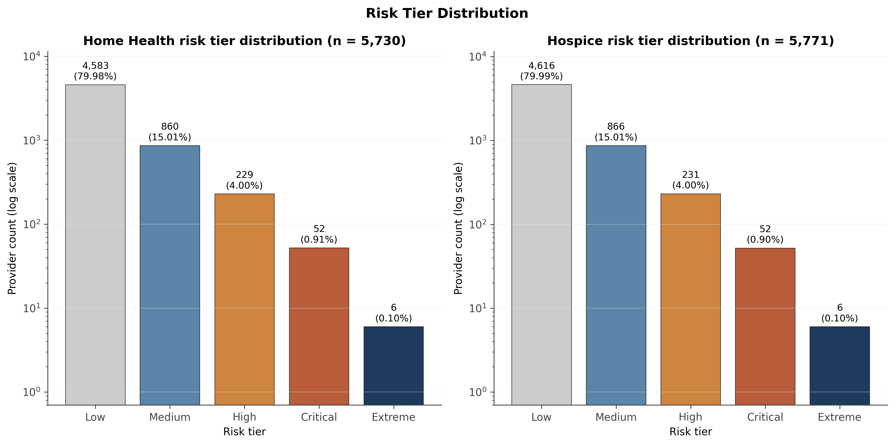
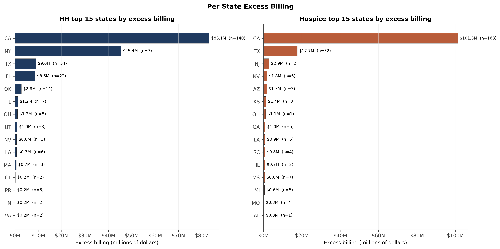
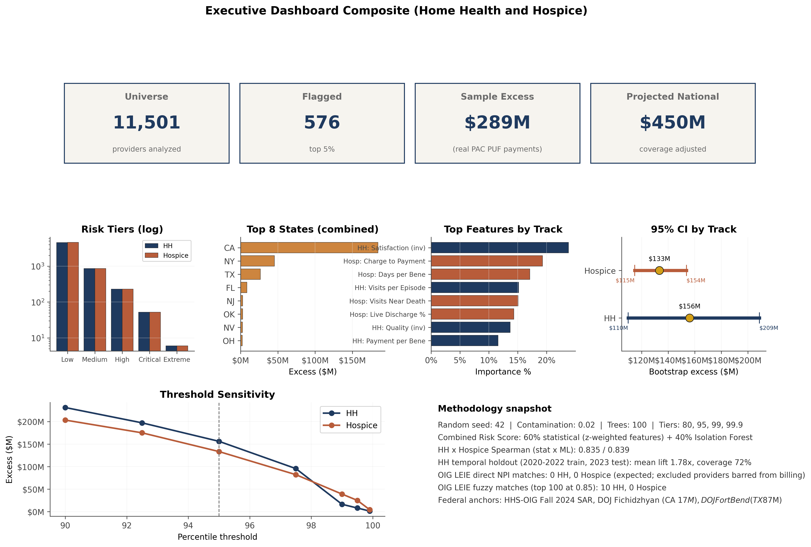

Home Health and Hospice Program Integrity
A dual track risk scoring framework for Medicare home health agencies and hospice providers. The system builds parallel analytical universes for each provider type, applies state level peer baselines per engineered feature, and produces threshold sensitivity analysis across percentile cutpoints to support flexible federal program integrity targeting.
Methodology
The analytical universe consists of 11,501 providers total, split between 5,730 Medicare certified home health agencies and 5,771 Medicare certified hospice providers. The universe filter requires at least eleven beneficiaries in the 2023 Post Acute Care Public Use File, the CMS threshold for protected health information masking.
Engineered features are computed separately for each provider track to respect the different clinical and billing structures of home health versus hospice. State level peer baselines provide the reference distribution for each feature, with national baselines as a secondary reference for small states.
The risk score combines statistical features with isolation forest anomaly detection. The top five percent of each track defines the flagged set: 287 home health agencies and 289 hospices, for a combined total of 576 flagged providers.
Key findings
The dual track architecture produces 287 flagged home health agencies (sample excess 156.02 million dollars) and 289 flagged hospices (sample excess 133.31 million dollars). The combined sample excess is 289.33 million dollars.
State aggregation reveals concentration of flagged providers in specific states with elevated beneficiary counts. The per state excess analysis supports state level federal program integrity prioritization.
The threshold sensitivity analysis tests flagged count and excess at percentile cutpoints from 90 through 99, allowing reviewers to select a flag rate that matches operational review capacity.
Bootstrap distributions across one thousand iterations confirm stability of both the flagged count and the excess estimates within narrow confidence bands.
Selected figures



Verification
Every numerical claim in this project traces to a persisted result file in the public rebuild repository. Independent reviewers can reproduce both the home health and hospice universes, the state peer baselines, the risk scores, the flagged sets, and the sample excess computations from the same CMS Post Acute Care Public Use File.